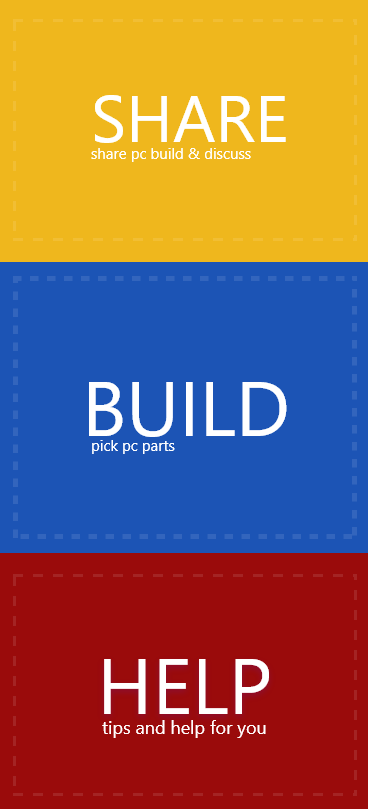
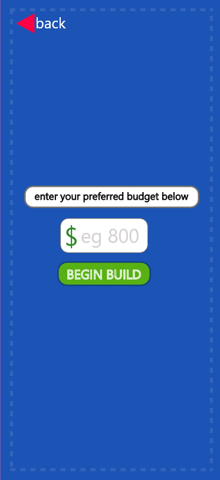
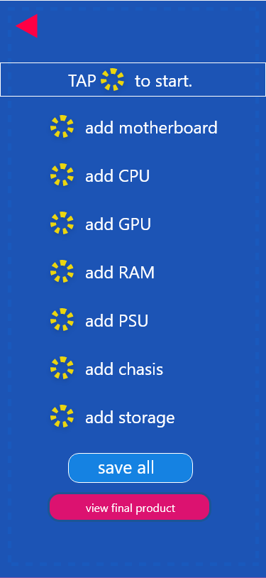
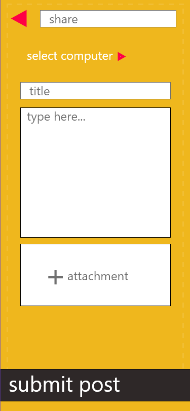
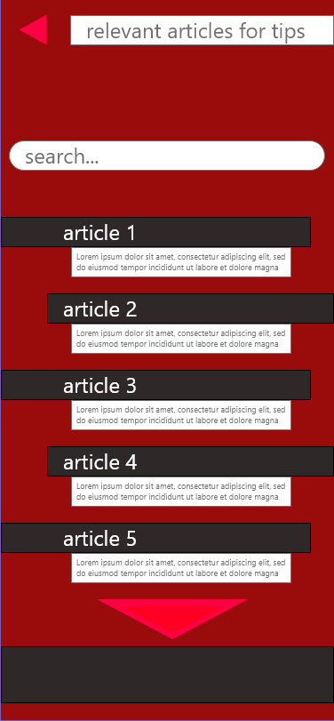
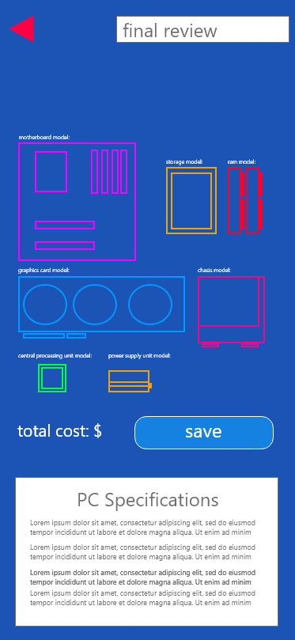
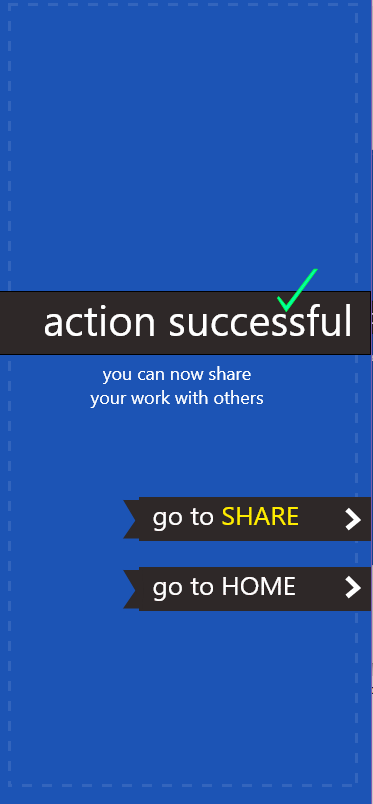

Usually an app has a loading screen before properly showing the main menu. This app will have a loading sceen with the title attached to it that says "Budget and Build".

Up next the app will be presented with the main menu, consisting of three interactable(tap) buttons that say BUILD, SHARE and HELP. Build - takes you to building your budget PC. Share, will let you post your build for others to see. Help - will offer tips and tricks for beginners on the broad forum. Up next the app will be presented with the main menu, consisting of three interactable(tap) buttons that say BUILD, SHARE and HELP. Build - takes you to building your budget PC. Share, will let you post your build for others to see. Help - will offer tips and tricks for beginners on the broad forum.


Users can enter a price and then tap on BEGIN BUILD to start. The second image shows what the user needs to find to build a PC. They will need to tap on the circle icons next to the text to begin the searching process.

This is what the SHARE section will appear like. Users are able to put a heading along with a description after they have specified which PC build they would like to share. An attachment option is allowed if the user wishes to include any other things(image, video etc). After filling out these empty sections, the user must submit the post at the bottom and then they will be directed to the next page where it will tell the user that the post was a success. From here the user can choose to read other posts or return to the home page. Go to discussion is a potential part of the app so it is currently not functionable.



The last most important feature of this app is the HELP part. This is where users can go for help. They can choose to search or view popular articles regarding PC related topics. The big red arrow at the bottom allows the user to look for more without having to search any up. The second image reads final review and this isthe summary page and the page next to it is what happens when a user taps on SAVE.
These are the basic structure of the app and how it functions. My initial goal of this was to make sure the app is clear and easy to navigate but remain interesting to look at. The last image shows what the user will see at the end of their PC build - as this is what the "view final product' button does.